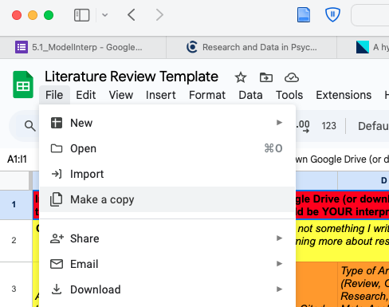

5L_Methods
Check-In : Review Time!
Use the cal_mega dataset (from Lab 4) to answer the questions in the check-in. Make sure to save your work in an R script.
What is the sample size of this dataset?
Create a likert scale to measure people’s love of Dancing. This was measured with the following variables : dance1, dance2, dance3r, and dance4r. Note that dance3r and dance4r are negatively-keyed, and will need to be reverse scored. What number will you need to subtract dance3r and dance4r from in order to reverse score them?
What is the alpha reliability of this scale? Round to two decimal places.
What is the mean of this scale? Round to two decimal places.
Graph the variable as a histogram. Describe the shape; what do you learn about our class from this variable?
The variable hrs.screen asked students to report how many hours of screens they used (according to their phone) in the last day. What is the mean of this variable? Round to two decimal places.
How many people did not report their hours of screen usage (i.e., how many NAs are there in this variable?)
What’s the z-score for someone who stared at their screen for 8-hours a day? Round to two decimal places.
What does this z-score tell you?
Announcements
Mini Exam is in NEXT weeks [2/28]
take home; open-note; open-book; DO ON YOUR OWN.
held during normal class; 85 minutes (DSP students get extra time accommodations)
practice exam will post next week
Lab 5. Do the Fall 2024 Mini Exam. Look over the key (video key!) after you’ve done. Submit your completed exam. Auto graded, but I want you do to. (PRACTICE PRACTICE PRACTICE!)
Milestone #1 Due in TWO weeks [3/9]
Agenda
2:10 - 3:10 | Check-In and Review
3:10 - 3:30 | Reliability and Validity
3:30 - 3:42 | Break Time
3:42 - 4:30 | Project Workshop.
Professor Check-In Code
Reliability and Validity


- Relevance to Real-Life.
How would you evaluate the reliability and validity of the STEP COUNTER on your phone???
| Term | Way of Testing |
| face : does our measure or result look like what it should look like? | |
| convergent : is our measure similar to related concepts? | |
| discriminant : is our measure different from unrelated concepts? | |
| test-retest : do we get the same result if we take multiple measures? | |
| interrater reliability : would another observer make the same measurements? | |
| inter-item reliability : would one item in the likert scale be related to others? |
BREAK TIME : MEET BACK AT 3:42
Milestone #1 | Final Project Workshop
Final Project Description & Rubric + Milestone #1
RECAP : Questions About the Research Process / Scientific Articles?
Introduction Deconstruction :
The introduction starts broad, but then quickly focuses on the variables in your model so readers can understand a) what your study is about and b) why you’re doing your study.
| Section | Brief Explanation |
| 1. The Opening | Describe the question you have, and explain why this question matters |
| 2. The Review | Describe what past research and theory has to say on the question and your theory. Your goal is to give the reader the background they need to understand why you are doing your study; you don’t need to cover EVERY single issue on your topic.. |
| 3. The Critique | Explain why the past research is not “the final truth”, and what other new questions might be important to consider (and why these questions matter). Only point out limitations with past research that you will address in your study; other limitations that you think future research will address should go in the discussion section. |
| 4. The Current Research | Explain what specific questions your study will address. Be clear by stating each idea as a hypothesis with language like, “I predict” or “My first hypothesis”. |
- STEP 1 : read an excerpt from the introduction3; identify (in the margins) each of part of the introduction (“The Opening”, “The Review”, “The Critique”, and “The Current Research”)

ACTIVITY : Doing a Lit Review
-
Open document.
Click File –> Make a copy

- Fill in with your own notes about the research you find!
Check-Out
Footnotes
Brandt, D. J., Sommer, J., Krach, S., Bedenbender, J., Kircher, T., Paulus, F. M., & Jansen, A. (2013). Test-retest reliability of fMRI brain activity during memory encoding. Frontiers in psychiatry, 4, 163. [Link to Full Article]↩︎
Bennett, C. M., Miller, M. B., & Wolford, G. L. (2009). Neural correlates of interspecies perspective taking in the post-mortem Atlantic Salmon: an argument for multiple comparisons correction. Neuroimage, 47(Suppl 1), S125. [Link to Full Article]↩︎